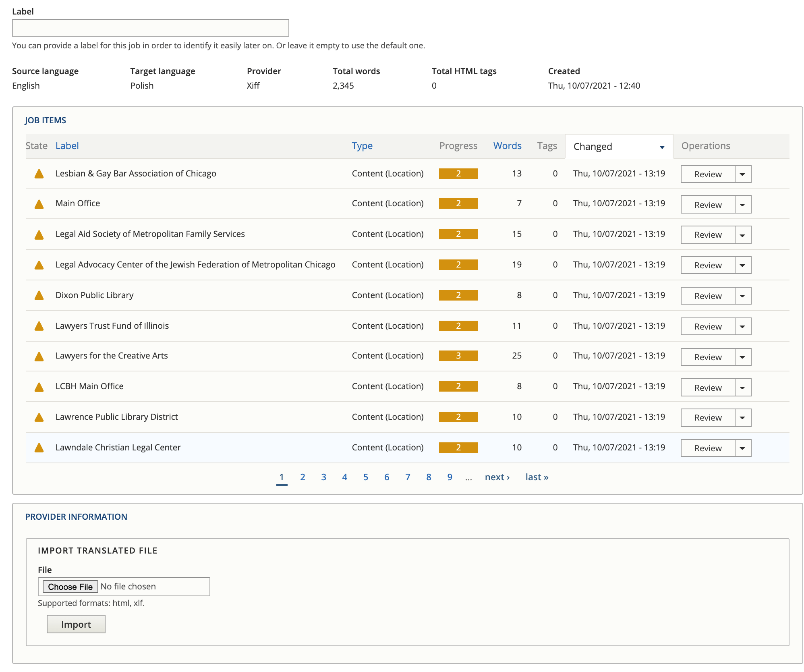

Content Translation¶
Content translation includes:
Content types, like legal content, basic pages, organizations, locations, and services.
Blocks, like the banner on the top of pages
In node translation¶
Content can be translated by clicking the “Translate” link on the edit page or when viewing the content and clicking Add to create a new translation or Edit to edit an existing translation under Operations

In the image above, there is a Spanish translation that can be edited. A Polish translation would need to be added.
Using the translation management system¶
The translation management system can be used to import and export content for translation. This can be done:
Directly in content, by clicking translate and add to cart or request translation
Using sources under the Translation menu.
Using source, you can:
Filter on a source type. The source type for content items is content. Blocks can also be accessed here.
Filter by Content type
Check the nodes you want to add to cart (you do have to page through all pages)
Checking out a cart¶
To check out a cart, select the language(s) to translate to and press Request translation.

Check out a job¶
You can check out a job in Xliff or HTML format. Xliff is usable with POeditor and many translation systems. Check the job out by pressing “Submit to provider” This will then show a file can be downloaded here message.
Importing a file¶
Translations are in jobs that can then be imported back in by selecting Manage next to the job on the Jobs tab.

This will show a list of content in the job and a space to import a translated file. Once a file is imported, each content needs to be reviewed.
Reviewing content¶
Pressing review next to an item will show a page with all of the translatable fields.
Press the check next to a translation to approve it
You can change the text if it is incorrect
You can save and return
You can save as completed. This is true even if yu do not approve all translations.
Legal content tools¶
Legal content types have translation-related fields that can be used to flag content for translation/re-translation
Request translation be created is a yes/no (defaults to no) to indicate that content should be translated
Mark translation as outdated is a yes/no to indicate if the English version has been so substantially changed that we need to re-translate the Spanish and Polish versions.